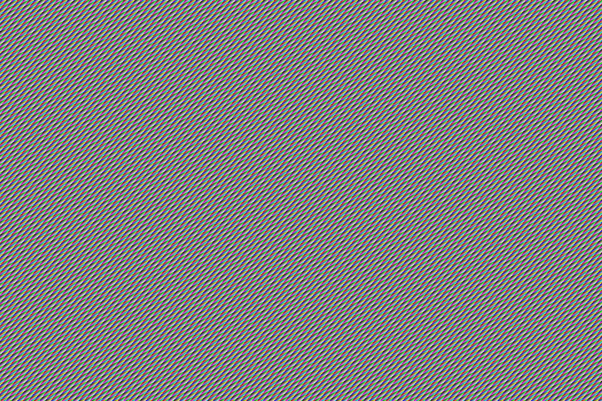
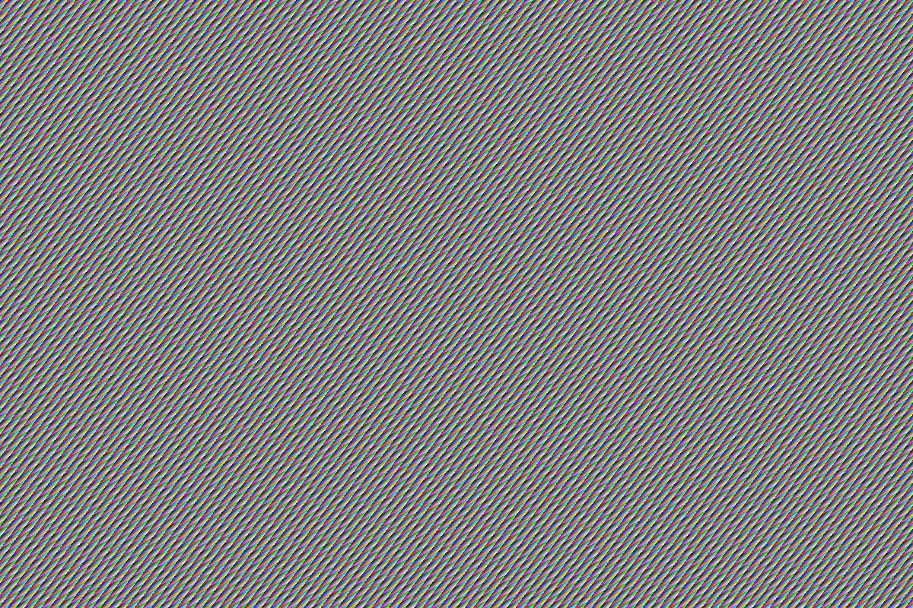
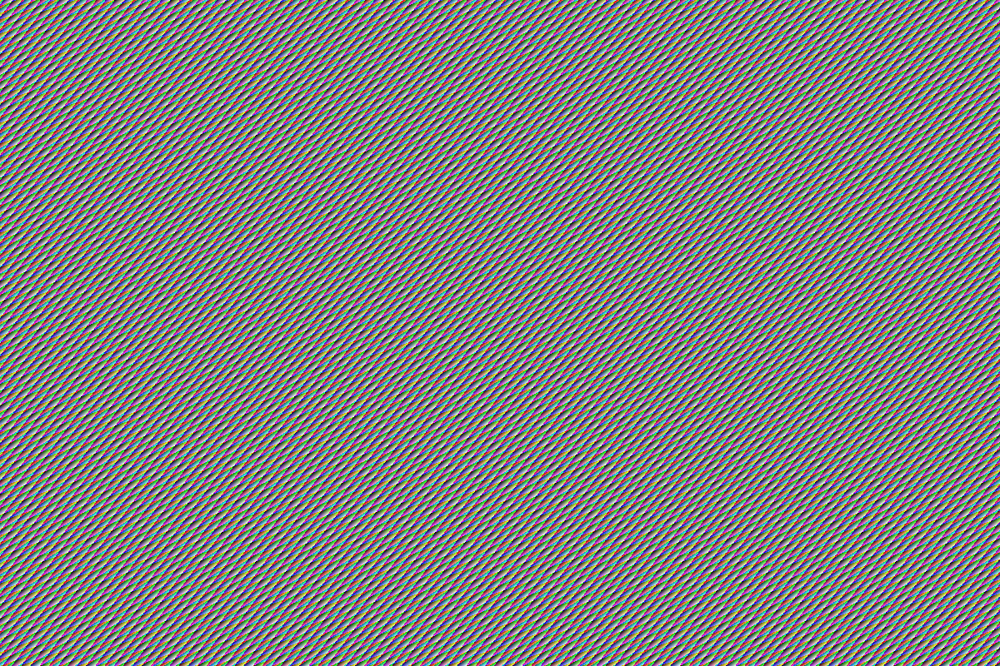
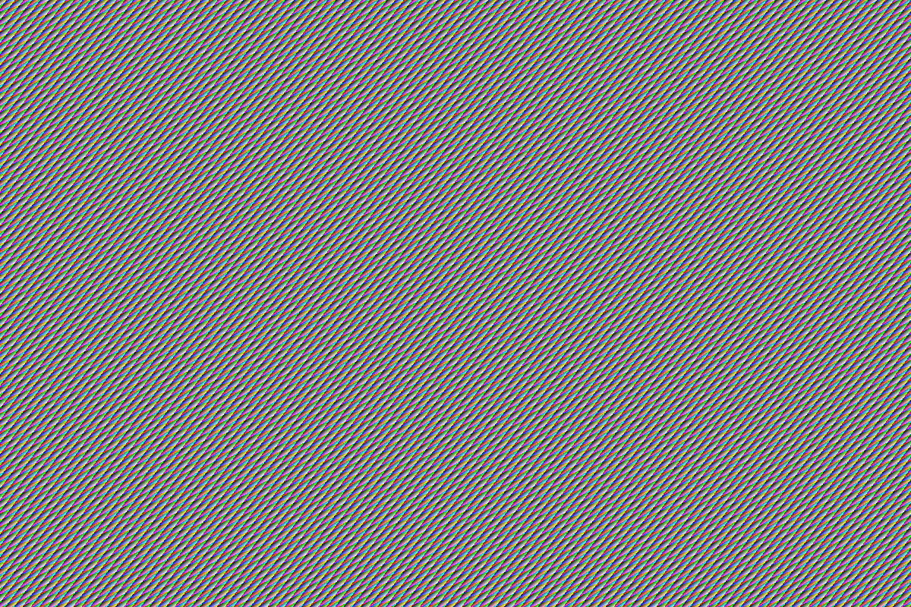

Bespoke Commissions & Services
From one-of-a-kind evening clutches to personalized executive folios, our craftsmen build made-to-measure heirlooms tailored to your aesthetic vision.

The Mercer Flap Envelope
A svelte, structured envelope pochette featuring an asymmetric diagonal front flap, hidden dual magnetic disc closures, and dedicated slots for cards and handheld essentials.

The Alentejo Foldover Clutch
Softly sculpted foldover geometry crafted from supple fine-grain cork textile, lined with natural unbleached cotton twill, and fitted with an interior brass zippered pocket.

Hand Edge Finishing & Burnishing
Every cut seam is beveled by hand, treated with seven progressive coats of water-based Italian edge dye, and hand-rubbed with organic beeswax for a mirror-smooth protective edge.
Hot-Foil Bespoke Monogramming
Personalized initials or family crests hand-stamped using traditional heated brass type and genuine 24-karat gold or matte gilded foil on the interior pocket leather tab.

Solid Milled Brass Hardware Integration
Integration of bespoke turnlocks, magnetic snap clasps, and detachable woven cork shoulder straps featuring hand-soldered brass snap hooks.

Atelier Restoration & Re-waxing
Comprehensive lifetime maintenance for all registered pochettes, including edge re-glazing, stitch re-tensioning, and natural suberin conditioning treatments.